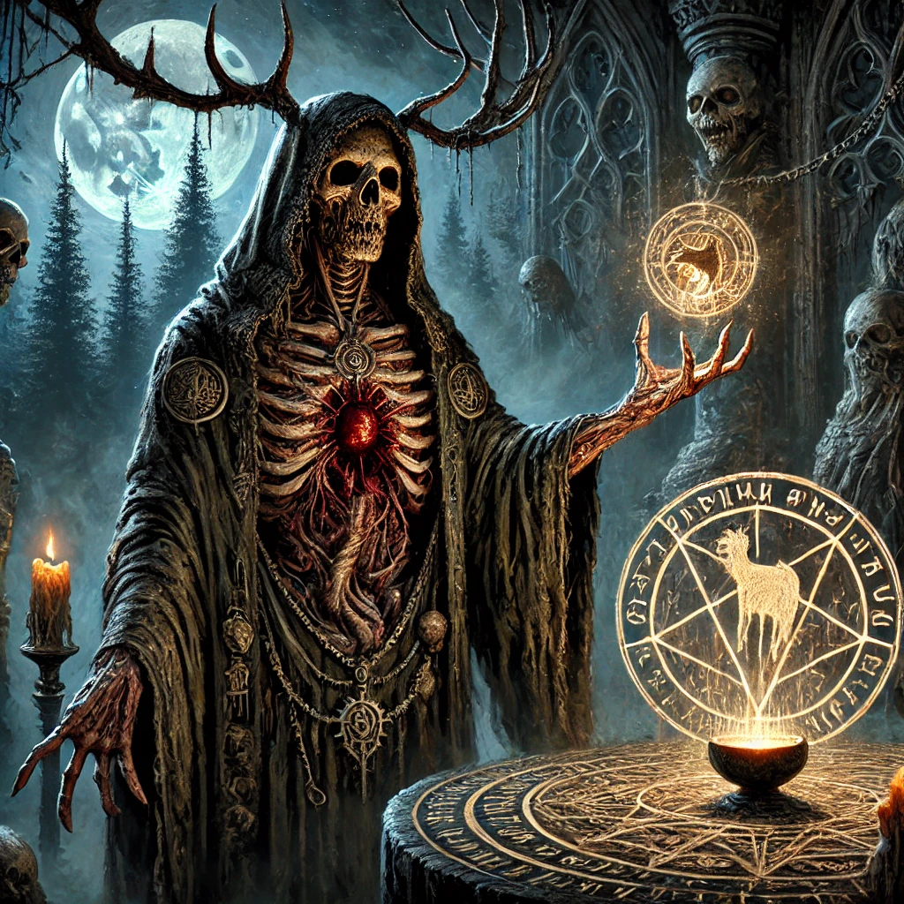

We always should have known this would happen. One day we would wake up and it would be exactly like yesterday and yesterday and yesterday and yesterday. The only breaks are the weekends we swear to ourselves we'll make something of and yet nothing ever happens. We sleep and we eat then watch screens flash in front of us telling us stories about people who did what we wish we would. WOULD. NOT 'could'. What we WOULD do.
